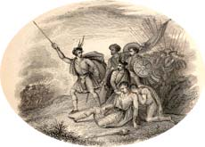

|
|
||||
|
|
Home | Corson Collection | Biography | Works | Image Collection | Recent Publications | Portraits | Correspondence | Forthcoming Events | Links | E-Texts | Contact Tales of a GrandfatherFirst Edition, First Impression: 1) Tales of a Grandfather; Being Stories Taken from Scottish History. Humbly Inscribed to Hugh Littlejohn, Esq. In Three Vols. Vol. I[II-III]. Printed for Cadell and Co. Edinburgh; Simpkin and Marshall, London; and John Cumming, Dublin. 1828. 2) Tales of a Grandfather; Being Stories Taken from Scottish History. Humbly Inscribed to Hugh Littlejohn, Esq. In Three Vols. Vol. I[II-III]. Second Series. Printed for Cadell and Co. Edinburgh; Simpkin and Marshall, London; and John Cumming, Dublin. 1829 3) Tales of a Grandfather; Being Stories Taken from Scottish History. Humbly Inscribed to Hugh Littlejohn, Esq. In Three Vols. Vol. I[II-III]. Third Series. Printed for Cadell and Co. Edinburgh; Simpkin and Marshall, London; and John Cumming, Dublin. 1830. 4) Tales of a Grandfather; Being Stories Taken from the History of France. Inscribed to Master John Hugh Lockhart. In Three Vols. Vol. I[II-III]. Printed for Robert Cadell. Edinburgh; Whittaker and Co., London; and John Cumming, Dublin. 1831. Composition | Reception | Links
Initially, this middle ground proved elusive, and Scott came to feel that he was guilty of 'writing down' at the beginning of the first volume. James Ballantyne concurred, judging the tone of the opening chapters alternately too historical and too infantile. So familiar was Scottish history to Scott, however, that once he had found a satisfactory register, he worked rapidly upon the manuscript. The First Series, which covered the period between the reign of Macbeth (1033-56) and the Union of the Crowns (1603), was complete by November 1827. It was published on December 15, 1827 with an eye to the Christmas market. It sold so well that before the end of the month, Cadell had commissioned a revised and enlarged second edition.  In May 1828 Scott agreed to write a Second Series of Tales. By July, he realized he had so much material that he proposed ending the series with the Union of England and Scotland (1707) then composing a Third Series extending the narrative to the end of the eighteenth century. The Second Series was completed on September 1, 1828 and published on November 27. The Third Series, which culminated in the aftermath of Culloden (1746), appeared on December 21, 1829. In July 1830, agreed to write a fourth series dealing with French history from Charlemagne to Louis XIV. His research for these volumes also fed into his novel Count Robert of Paris (1832) and revisited material used in his earlier Quentin Durward and Anne of Geierstein. Published on December 20, 1830, the Fourth Series was received as favourably as the earlier Tales, and a second French series was pledged for Christmas 1831. Scott completed the first volume but suspended the second midway, in order to concentrate on Count Robert of Paris and Castle Dangerous. On December 15, 1831 Scott received news of the death of the ten-year-old John Hugh Lockhart. He was not to return to the manuscript before his death. ReceptionThe tremendous popular success of the Tales was matched by almost unanimous critical approval. The Athenaeum, in particular, welcomed them as an important contribution to the campaign to encourage improving writing for children. Scott was widely applauded for his efforts to be even-handed towards different political factions. Some critics, however, such as Andrew Bisset in the Westminster Review, censured Scott for not drawing sufficiently clear moral lessons from the events recounted. The Edinburgh Literary Journal too felt that Scott was inclined to sit on the fence and to avoid potentially controversial topics in a quest for popularity. The manuscript of the incomplete Fifth Series of Tales of a Grandfather has recently been published by Illinois University Press (1996). The prefatory essay by the editors William Baker and J.H. Alexander provides a useful introduction to the Tales as a whole. See below for a holograph fragment of the manuscript of Tales of a Grandfather.
Links
Last updated: 19-Dec-2011
|
|||